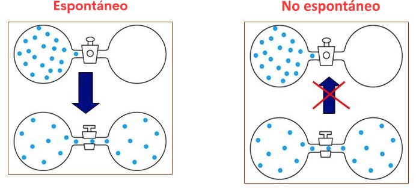
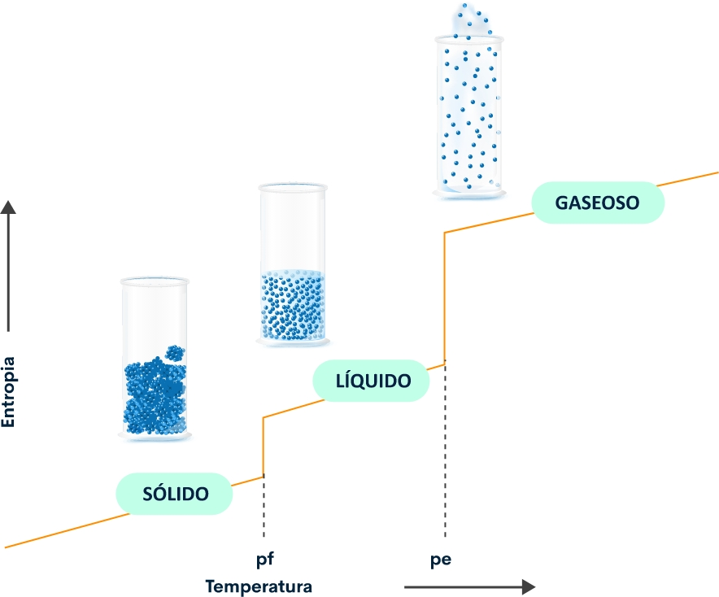
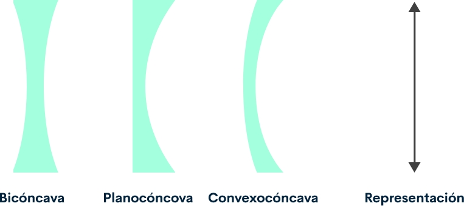

Introducción
En este tercer espacio harás un recorrido a través de la mecánica clásica, las leyes de Newton, la termodinámica, la acústica y la óptica entre otros, para conocer el mundo que nos rodea.
Desde sus orígenes, el hombre se ha preguntado acerca de interacciones, aplicaciones, comportamientos repetidos y otras cosas sobre los objetos que lo rodea. Es entonces, cuando la física se establece como una ciencia natural encargada de estudiar la materia y la energía del universo.
Por medio de los principios fundamentales, la física ha tratado de explicar algunos fenómenos como: la existencia de los agujeros negros, la producción de impulsos eléctricos en el cuerpo humano o la producción de energía en las termoeléctricas, entre otras cosas.
1. Magnitudes físicas
En primer lugar, la medición permite una descripción de los sistemas físicos, al establecer relaciones cuantitativas con las variables que afectan su comportamiento. Las propiedades como cualidades principales de los cuerpos o fenómenos naturales, y que pueden ser medidas, son llamadas como: “magnitudes físicas”. La longitud, la masa, la velocidad, el tiempo y la temperatura, entre otras.
Las mediciones exactas y confiables necesitan unidades que no se puedan alterar y sean universales. Por esto, en un acuerdo firmado en 1960 se estableció que en la mayoría de los países del mundo utilizarán un sistema de unidades para científicos e ingenieros; este se denomina Sistema Internacional de Unidades (SI).
Unidades básicas sistema internacional
| Concepto | Nombre y símbolo | Definición |
|---|---|---|
| Longitud | Metro (M) |
El metro (m), es la unidad del SI para la longitud. Este se define al fijar el valor de la velocidad de la luz en el vacío (c), en 299.792.458. Se expresa en m·s-1, en donde los segundos están en función de la frecuencia del cesio, 133 (ΔνCs). A partir de la relación de c=299.792.458 m·s-1, se obtiene la expresión del metro. Con esto, podemos concluir que la definición del metro se da por la longitud de la distancia recorrida por la luz durante un intervalo de 1/299.792.458 segundos. |
| Masa | Kilogramo |
El Kilogramo (kg), es la unidad del SI para la masa. Este se define al fijar el valor de la constante Planck (h), en 6,626 070 15 × 10-34, cuando se expresa en la unidad J·s, que es igual a kg·m2·s-1, donde el metro y el segundo están en función de c y ΔνCs. De la relación exacta de h = 6,626 070 15 × 10-34 kg·m2·s-1, se obtiene la unidad de kg·m2·s-1, y de esta, la expresión para el kilogramo, que está en función de la constante de Planck 
A partir de esto, y con las definiciones del segundo y el metro, se obtiene la definición del kilogramo en función de las constantes h, ΔνCs y c: Basado en lo anterior, se define la unidad kg, m2 y s-1, unidades de las magnitudes físicas en acción y movimiento angular, junto con las definiciones del segundo y el metro; esto lleva a la definición para la unidad de masa en función de la constante Planck (h). |
| Tiempo | Segundos |
El segundo (s), es la unidad del SI para el tiempo. Este se define al fijar el valor de la frecuencia de la transición hiperfina del estado fundamental no perturbado del átomo de Cesio 133 ΔνCs, en 9.192.631.770, cuando se expresa en Hz=s-1. De la relación exacta de ΔνCs=9.192.631.770 s-1, se obtiene la expresión para el segundo, que está en función de ΔνCs. A partir de lo anterior, el segundo es la duración de 9.192.631,770 periodos de radicación en cuanto a la transición entre dos niveles hiperfinos del estado fundamental no perturbado del átomo del Cesio, 133. |
| Intensidad de corriente eléctrica | Amperio (A) |
El amperio (A), es la unidad del SI para la intensidad de una corriente eléctrica. Este se define al fijar el valor de la carga elemental (e), 1,602 176 634 × 10-19, cuando se expresa en la unidad C=A·s, donde el segundo se define en función de e y ΔνCs. De la relación exacta de e=1,602.176.634×10-19 A·s, se obtiene la definición del amperio en función de las constantes e y ΔνCs. En esta definición, se concluye que el amperio es la corriente eléctrica en cuanto al flujo de 1/ (1,602.176.634×10-19) =6,241.509.074×1018 cargas elementales por segundo. |
| Tempera- tura termodiná-mica | Kelvin (K) |
El Kelvin (K), es la unidad del SI para la temperatura en termodinámica. Este se define al fijar el valor de la constante de Boltzmann (k), 1,380 649 × 10-23, cuando se expresa en J·K-1=kg·m2·s-2·K-1, donde el kilogramo, el metro y el segundo están en función de h, c y ΔνCs. De la relación exacta de k = 1,380 649 × 10-23 kg·m2·s-2·K-1, se obtiene la expresión para el Kelvin, que está en función de k, h y ΔνCs. De acuerdo con lo anterior, se puede concluir que el Kelvin hace referencia a la variación de la temperatura termodinámica que da lugar, a su vez, a un cambio en la energía térmica de kT de 1,380.649×10-23J. |
| Cantidad de sustancia | Mol (mol) |
El mol (mol) es la unidad del SI para la sustancia. Un mol contiene 6,02214076×1023 entidades elementales, el cual es el valor de la constante de Avogadro (NA), cuando se expresa en mol-1 se denomina como número de Avogadro. La cantidad de sustancia (n) de un sistema, es una medida del número de entidades elementales especificadas, como un átomo, una molécula, un ion, un electrón, o cualquier otra partícula o grupo especificado de estas. De la relación exacta de NA=6.022.140.76×1023mol-1, se obtiene la definición de un mol en función de la constante NA. Teniendo en cuenta lo anterior, se puede definir el mol como la cantidad de sustancia de un sistema que contiene 6,022.140.76×1023 entidades elementales especificadas. |
| Intensidad luminosa | Candela (CD) |
La candela (cd) es la unidad del SI para la intensidad luminosa en una dirección dada. Este se define al fijar el valor de la eficacia luminosa de la radiación monocromática con una frecuencia de 540×1012 Hz, Kcd, en 683, cuando se expresa en lm·W-1=cd·sr·W-1 o cd·sr·kg-1·m-2·s3, donde el kilogramo, el metro y el segundo están en función de h, c y ΔνCs. De la relación exacta de Kcd=683cd·sr·kg-1·m-2·s3 se obtiene la definición para la candela: Con lo anterior, se puede definir la candela como la intensidad luminosa en una dirección dada, por una fuente que emite una radiación monocromática de frecuencia 540×1012 Hz, además, tiene una intensidad radiante en esa dirección, igual a 1/683 W/sr. |
Para complementar la información lo invitamos a leer el capítulo 19 y 20:

Consulte la biblioteca Digital
Medina, G. H. (2010). Física 1
2. Mecánica clásica
En este espacio, se describe el movimiento más simple: el movimiento rectilíneo y se introducen las magnitudes cinemáticas de: posición, velocidad y aceleración.
2.1 Movimiento rectilíneo
Es importante diferenciar entre posición del móvil en un instante t y desplazamiento del móvil entre dos instantes: inicial t0 y final t.
La velocidad se calcula basado en la velocidad medida en varios intervalos de tiempo cada vez más pequeños. Esto nos permite recordar el concepto de la derivada de una función.
Por medio del registro de velocidad en función del tiempo, se calcula el desplazamiento del cuerpo entre el tiempo inicial t0 y el final t, lo cual permite recordar el concepto de integral definida.
Finalmente, se estudian dos casos particulares que se describen a continuación:
Movimiento rectilíneo uniforme
Movimiento rectilíneo uniformemente acelerado

Sus ecuaciones son conocidas, y se utilizan con frecuencia. En la recta. Se da un origen, en donde habrá un observador que medirá la posición del cuerpo (x) en un tiempo determinado (t). Las posiciones serán positivas (si el cuerpo está a la derecha) o negativas (si el cuerpo está a la izquierda) con respecto al origen.
Magnitudes cinemáticas
Denominamos Movimiento rectilíneo como aquel cuya trayectoria es una línea recta así:
En la recta, se da un origen, en donde habrá un observador que medirá la posición del cuerpo (x) en un tiempo determinado (t). Las posiciones serán positivas (si el cuerpo está a la derecha) o negativas (si el cuerpo está a la izquierda) con respecto al origen.
Posición de cuerpo
Denominamos Movimiento rectilíneo como aquel cuya trayectoria es una línea recta así:
Se denomina desplazamiento de posición (x) en un tiempo determinado (t).
La posición (x) del cuerpo está relacionado con el tiempo (t) por medio de la función x=f(t).
Velocidad
La velocidad media entre los instantes t y t’ está definida por:
Para calcular la velocidad en el instante (t), se debe hacer el intervalo de tiempo Δt lo más pequeño posible, cuando Δt tienda a 0.

Lo anterior es la derivada de la función x con respecto al tiempo (t). El promedio de la velocidad se calcula en un tiempo Δt limitado. La velocidad instantánea en un intervalo de tiempo dado en Δt →0.
Aceleración
Se denomina aceleración al cambio o variación de velocidad v en un determinado tiempo t
2.2 Casos particulares
En el estudio de la física de pueden especificar los movimientos que se describen a continuación:
Movimiento rectilíneo uniforme
Se denomina movimiento rectilíneo a aquel movimiento que tiene velocidad constante, y, por esto, aceleración nula. Se calcula la posición x de un cuerpo en un instante t, así:
O gráficamente, teniendo a v en función de t, en consecuencia, v en función de t como se describe a continuación:
Representación de la velocidad en función del tiempo
Generalmente, el tiempo inicial (t0) se toma como 0. Con esto, las ecuaciones del movimiento rectilíneo uniforme resultan como:
Movimiento rectilíneo uniformemente acelerado
Denominamos movimiento rectilíneo uniformemente acelerado a aquel que tiene una aceleración constante, por ende, se da un cambio en la velocidad v-v0 entre dos instantes t0 y t, mediante integración.
Se obtiene el desplazamiento x-x0 del cuerpo entre dos instantes t0 y t, teniendo en cuenta que la velocidad está en función del tiempo. Esto se puede realizar gráficamente (área-rectángulo+área-triángulo) o integrado:
Generalmente, el tiempo inicial (t0) se toma como 0. Las fórmulas del movimiento rectilíneo uniformemente acelerado, serían:
Si se despeja el tiempo t en la segunda ecuación y reemplazando en la tercera, se relaciona la velocidad v con el desplazamiento x-x0.
2.3 Caída libre
Los cuerpos dentro de la Tierra se mueven con aceleración constante g (gravedad). Para describir un movimiento, se deben tener en cuenta los siguientes pasos:
Establecer un sistema de referencias (origen y eje del movimiento).
Establecer el valor y el signo del movimiento.

El valor y el signo de la velocidad inicial v0.
Establecer la posición inicial del cuerpo x0.
Escribir las ecuaciones del movimiento.
Teniendo en cuenta los datos dados, despejar las incógnitas.
Un cuerpo es lanzado desde una montaña de altura x0 con velocidad v0, determinar las ecuaciones del movimiento, la altura máxima y el tiempo que tarda el cuerpo en alcanzar el origen situado en el suelo.
Representación de caída libre

Primero, se establece el origen y la dirección del movimiento (eje X). Luego, los valores y signos de la velocidad inicial y la aceleración, como se muestra en la figura. Obteniendo las siguientes ecuaciones:
En el momento en que el cuerpo alcanza la altura máxima, su velocidad es igual a 0. Se puede obtener el tiempo que transcurre desde que se lanza hasta que llega esta posición por medio de la ecuación de la velocidad. El resultado de este se reemplaza en la ecuación de posición, obteniendo así, la altura máxima que alcanza el móvil medida desde el suelo.
Por medio de la ecuación de la posición se puede obtener el tiempo transcurrido en llegar al suelo (poniendo x-0), resolviendo así, una ecuación de segundo grado.
Magnitudes cinemáticas
Supongamos, que el movimiento está dentro del plano XY. Se sitúa un origen y unos ejes. Se representa la trayectoria del cuerpo (conjunto de puntos por donde pasa el cuerpo). Las magnitudes que describen un movimiento curvilíneo son:
Vector de posición

La posición del cuerpo cambia con el tiempo. En el instante t, el cuerpo se encuentra en el punto P (. ), y en el instante t’ se encuentra
en el punto P’ ( ). Cuando el cuerpo se desplaza en el intervalo de tiempo de Δt=t’-t, la dirección del vector representa la secante que une a los puntos P y P’.
Vector de velocidad
El vector de velocidad media se define como el cociente entre el vector de desplazamiento () y el tiempo que ha transcurrido en el desplazamiento (Δt). El vector de la velocidad media y el vector del desplazamiento tienen la misma dirección entre los instantes t y t2, y de la secante que une los puntos P y P’. El vector de velocidad media y el de desplazamiento tienen la misma dirección, de aquí se obtiene la secante que une a los puntos P y P’. La dirección de la velocidad corresponde a la trayectoria del punto P en el instante t.
Cuando el cuerpo está en el punto P’ en el instante t’, tiene una velocidad:
Vector de aceleración
En este instante, el cuerpo cambió, su velocidad tanto en módulo como en dirección está entendida en:
Se denomina aceleración al cociente entre el vector del cambio de velocidad y el intervalo de tiempo en el que se da dicho cambio. Y la aceleración en un instante, definida así:
En conclusión, las ecuaciones del movimiento curvilíneo en los ejes XY, son:
Las ecuaciones de la primera fila son ecuaciones del movimiento rectilíneo en el eje X, mientras que las ecuaciones de la segunda fila pertenecen al movimiento rectilíneo en el eje Y. Un movimiento curvilíneo es el conjunto de los movimientos rectilíneos en los ejes coordenados.
2.4 Casos particulares
Algunos movimientos tienen procesos particulares, estos serán descritos a continuación:
Movimiento circular uniforme
Se denomina movimiento circular uniforme a aquel que tiene una velocidad angular ( ) constante, y su aceleración es nula. La posición angular () del móvil en el instante t, es:
En la representación gráfica de la función t es su área. Generalmente, el tiempo inicial (t0) se toma como 0. Las ecuaciones del movimiento circular uniforme son similares al movimiento rectilíneo uniforme.
Movimiento circular uniformemente acelerado
Se denomina movimiento circular uniformemente acelerado a aquel que tiene aceleración constante. Se obtiene la velocidad angular (-0) entre los instantes t0 y t gracias a la aceleración angular. A partir de la velocidad angular () se puede obtener el desplazamiento -0 del cuerpo entre los instantes t0 y representado gráficamente (área rectángulo +área triángulo), o integrado:
Representación movimiento circular uniformemente acelerado
Generalmente, el tiempo inicial (t0) es 0. Las fórmulas del movimiento curvilíneo uniformemente acelerado son similares a las del movimiento rectilíneo uniformemente acelerado, y se representan así:
Se puede relacionar la velocidad angular con el desplazamiento del cuerpo despejando el tiempo en la segunda ecuación, y reemplazando en la tercera.
Consulte la biblioteca Digital
Medina, G. H. (2010). Física 1
2.5 Leyes de Newton
Isaac Newton nació en Inglaterra, fue científico y escribió “Los principios matemáticos de la filosofía natural”, cuyo tema principal fueron sus leyes del movimiento.
El movimiento se define como el desplazamiento que tienen los cuerpos en un espacio, frente a otro cuerpo, y es relativo, ya que depende de la posición del observador. La fuerza es la acción que tiene un cuerpo sobre otro y la masa es la magnitud que mide la cantidad de materia que tiene un cuerpo.
Isaac Newton afirmó que todo movimiento está regido por tres leyes
Primera Ley de Newton
Esta ley establece que todo cuerpo permanece en reposo o en movimiento rectilíneo uniforme, sólo cuando una fuerza externa no actúe sobre este. En caso de que se presente un cambio de movimiento en el cuerpo, ese presentará resistencia.
Segunda Ley de Newton
Esta ley establece que todo cuerpo permanece en reposo o en movimiento rectilíneo uniforme, sólo cuando una fuerza externa no actúe sobre este. En caso de que se presente un cambio de movimiento en el cuerpo, ese presentará resistencia.
Esta ley establece que una fuerza no equilibrada actúe sobre un cuerpo, habrá una aceleración en la misma dirección que la fuerza. La aceleración es directamente proporcional a la fuerza, pero inversamente proporcional a la masa del cuerpo. Si la masa del cuerpo es constante, la fórmula de la segunda ley de Newton es:
Pero, cuando la masa del cuerpo aumenta, la aceleración disminuye. En estos casos, se debe establecer la cantidad de movimiento (p) que es igual al producto de la masa del cuerpo por su velocidad. Así: p=mv.
En el SI la cantidad de movimiento es medida por kg/s, ya que, la unidad para las la masa es el kilogramo, y para la aceleración es m/s2. Por esto: Fuerza (N) = masa (kg) x aceleración (m/s2).
Tercera Ley de Newton
Esta ley establece que todo cuerpo permanece en reposo o en movimiento rectilíneo uniforme, sólo cuando una fuerza externa no actúe sobre este. En caso de que se presente un cambio de movimiento en el cuerpo, ese presentará resistencia.
Esta ley establece que, al ejercer una fuerza sobre un cuerpo, éste responderá con una fuerza de igual magnitud y en dirección opuesta.
3. Termodinámica
Se reconoce como la parte de la física que estudia la acción mecánica del calor y las restantes formas de energía.
3.1 Conceptos básicos
Conceptos básicos de Termodinámica
Calor
En termodinámica, se denomina calor a la transferencia de energía entre dos o más sistemas
Equilibrio Termico
Es el estado en el que las temperaturas de los cuerpos en contacto se equilibran, cuando inicialmente tenían temperaturas diferentes
Temperatura
Es una magnitud física que indica la cantidad de calor que hay en un sistema
3.2 Leyes de la termodinámica
Ley cero
Esta ley indica que, si dos cuerpos están en equilibrio térmico con un tercer cuerpo, entonces también están en equilibrio entre sí. Esto establece la temperatura como una propiedad fundamental y medible de la materia.
Primera ley
Esta ley establece que el aumento total de energía en un sistema equivale al aumento de energía del mismo, además del trabajo ejercido. Esto propone que el calor es una forma de energía, y está relacionado con la conservación de la misma.
Segunda ley
Esta ley establece que el calor se puede transferir desde un sistema con una temperatura inferior hacia otro sistema con una temperatura mayor, sin más energía.
Tercera ley
Esta ley establece que la entropía de un cristal puro en absoluto es igual a 0. Esto quiere decir, la entropía generalmente se refiere a una energía residual, y que es capaz de realizar trabajo, y ya que no hay energía térmica en el 0 absoluto, no hay energía residual. La entropía también se puede referir a una medida del desorden de un sistema, y un cristal perfecto es considerado perfectamente ordenado, un aumento de temperatura en este significa movimiento dentro del cristal, lo que causaría el desorden.
En conclusión, la termodinámica es una ciencia que se ha desarrollado durante seis siglos, cuyos principios se aplican a la mayoría de los dispositivos que se han inventado. Para profundizar la información lo invitamos a leer los capítulos 4, 6 y 7:
Consulte la biblioteca Digital
Medina, G. H. (2010). Física 1
4. Electromagnetismo
El magnetismo es un fenómeno físico que describe la ejecución de fuerzas de atracción o repulsión entre dos o más cuerpos. El único imán natural descubierto es el mineral magnetita, pero todos los cuerpos son influidos generalmente por un campo magnético. En algunos materiales es más fácil detectar propiedades magnéticas, como en el níquel, el hierro o el cobalto.
Conceptos electromagnetismo
Electrostatica
Se define como una carga eléctrica en estado de reposo. Todo esta conformado por átomos, los cuales son la partícula más pequeña de un material que conserva las propiedades del mismo. Cada átomo esta compuesto por un núcleo con carga positiva, alrededor de este núcleo, circulan en órbitas uno o más electrones ( carga negativa )
En estado de reposo, la carga positiva en el núcleo equivale a la suma de las cargas negativas de todos los electrones que giran alrededor, es decir, su carga es neutra, si el átomo gana uno o más electrones tendrá carga negativa (ion), mientras que un átomo que pierde uno o más electrones, tendrá carga positiva. Los átomos que tienen la misma carga, se repelan, pero si presentan diferentes cargas, se atraen.
Campo Eléctrico
Se denomina campo eléctrico a una cantidad vectorial que se encuentra en cualquier punto de universo.
Potencial Eléctrico
Se denomina potencial eléctrico al trabajo ejercido sobre una partícula con carga que se mueve en un campo eléctrico. El potencial eléctrico depende de la posición en la que se encuentra la partícula dentro del campo eléctrico. Utilizaremos el concepto de potencial eléctrico para describir la energía potencial eléctrica.
Para profundizar la información lo invitamos a leer el bloque 1 y 2:
Consulte la biblioteca Digital
Pérez, M. H. (2014). Temas selectos de física 2.
5. Óptica
La óptica es la rama de la física encargada de estudiar la radiación electromagnética (características, manifestaciones y su comportamiento). Está conformada por el estudio de la reflexión, la refracción, las interferencias, la difracción, la formación de imágenes y la interacción de la radiación con la materia. La óptica es la ciencia capaz de controlar la luz, ya que, la física considera como onda electromagnética a la luz.
5.1 Velocidad e interferencia de la luz
Actualmente, el valor de la velocidad de la luz en el vacío se considera como 299.792.458 m/s; cuyo uso se refleja en la medición de grandes distancias, partiendo del tiempo que emplea un pulso de luz o de ondas de radio para llegar a una meta y regresar.
5.2 Reflexión y refracción
A continuación, se describen las incidencias de la luz sobre los objetos:
Reflexión de la luz
La reflexión se da cuando la luz incide sobre un cuerpo, y este la regresa a una mayor o menor proporción, esto según sus propiedades. Gracias a la reflexión somos capaces de ver lo que nos rodea. Un claro ejemplo de reflexión es el espejo.
Refracción de la luz
Se define a la refracción luminosa como la variación que experimenta la dirección en la que se propaga la luz cuando atraviesa de forma oblicua la superficie de dos medios transparentes (de distinta naturaleza). Los lentes, los dispositivos fotográficos, el ojo humano, entre otros instrumentos ópticos están basados en este fenómeno. Generalmente, se presenta junto a una reflexión débil, generada en la superficie que limita a los dos cuerpos transparentes.
5.3 Lentes convergentes y divergentes
Los lentes son medios transparentes hechos de vidrio, cristal o plástico, separados por dos superficies, donde por lo menos una de ellas es curva.
Tipos de lentes
Los lentes son capaces de refractar luz y formar una imagen. La luz incide de forma perpendicular al plano focal (lentes convergentes) o del plano focal (lentes divergentes).
Lentes Convergentes
Clases de lentes convergentes
Existen principalmente tres tipos de lentes convergentes:
-
Biconvexas: tienen dos superficies convexas
-
Plano Convexas: tienen una superficie plana y otra convexa
-
Cóncavo Convexas (o menisco convergente): Tienen una superficie ligeramente cóncava y otra convexa
Los lentes convergentes se caracterizan por ser más gruesos en el centro que por su borde, y concentran en un punto los rayos de luz que lo atraviesan (F). La separación entre este punto y el lente se denomina como distancia focal (f).
Distancias focales
Hipermetropía

Lentes divergentes
Si el lente tiene mayor grosor en los bordes que en el centro, permite separar los rayos de luz que pasa por este, y se denomina como divergente.
Existen tres tipos de lentes divergentes:
-
Lentes bicóncavas: tienen ambas superficies cóncavas.
-
Lentes planos cóncavas: tienen una superficie plana y otra cóncava.
-
Lentes convexo cóncavas (o menisco divergente): tienen una superficie ligeramente convexa y otra cóncava.
Si observamos a través de un lente divergente, este da la sensación que los rayos se originan en el punto F, este punto se denomina foco virtual. La distancia focal es negativa en los lentes divergentes. La miopía (no poder ver bien de lejos) puede causarse por una deformación del ojo, consistente en un alargamiento anteroposterior, esto genera que las imágenes se formen con nitidez antes de llegar a la retina. Los lentes divergentes son empleados para corregir este defecto.
5.4 Construcción de imágenes
Si se toma un lente convergente y se mueve alejándose y acercándose a la imagen de una hoja de papel, se comprobará que, en cierta distancia, se forma una imagen invertida y más pequeña de los objetos que se encuentran alejados del lente. Cuando se es capaz de proyectar la imagen formada, se puede concluir que es una imagen real, y si no se puede proyectar, la imagen se considera virtual.
1- Para objetos alejados, los lentes convergentes forman imágenes reales, invertidas y de menor tamaño que dichos objetos.
2- Por otro lado, si se observa un objeto cercano por medio del lente, se obtendrá una imagen derecha y de mayor tamaño que el objeto. Para los objetos cercanos se forman imágenes virtuales, derechas y de mayor tamaño.
Si se intenta hacer lo mismo con un lente divergente, se obtendrá una imagen derecha y de menor tamaño que el objeto al mirar a través del medio, en vez de lograr proyectar una imagen en la hoja de papel.
Las imágenes generadas por lentes divergentes suelen ser virtuales, derechas y de menor tamaño que el real de los objetos.
Para profundizar la información lo invitamos a leer Bloque 2- 3.4:
Consulte la biblioteca Digital
Pérez, M. H. (2014). Temas selectos de física 2.
6. Naturaleza del sonido
Se denomina vibración a aquellos movimientos rápidos y pequeños. Cuando un cuerpo se mueve, produce una vibración en el aire, a partir de esto, se origina el sonido. El sonido, de igual forma, puede producir movimiento en los cuerpos. El sonido se propaga por cualquier tipo de materia, pero no se puede propagar por el vacío.
La velocidad de la propagación del sonido depende de la materia por la que este se propague, además de su temperatura. En sólidos, donde la distancia entre las partículas es fija, la velocidad permanece constante, en líquidos y en los gases, especialmente, la velocidad aumenta junto a la temperatura, ya que las partículas en los gases se mueven con mayor velocidad.
El sonido puede ser reflejado o absorbido en los objetos dependiendo de su material. Algunos materiales son capaces de realizar mayor absorción al sonido, pero menor reflejo, por esta razón se puede escuchar más débil, otros materiales son capaces de reflejar mejor el sonido, por esta razón se escuchan más fuertes. Cuando la onda sonora se encuentra con un material blando y áspero, aumenta la absorción de la misma. Se denomina reflexión de sonido en el caso de que la onda choque contra un obstáculo y cambie de dirección. Puede generar fenómenos como el eco, la reverberación y la resonancia.
El eco es fenómeno en el que el sonido generado se repite gracias a la reflexión de sonido en un cuerpo, es decir, el eco es una onda sonora reflejada.
6.1 Características del sonido
6.2 Efecto Doppler
Se denomina efecto Doppler a la variación de frecuencia en una onda producida por un cuerpo respecto a un observador en reposo o en movimiento. Este fenómeno es empleado para medir flujos sanguíneos en medicina, movimientos de galaxias en expansión en astronomía y en velocidades en vehículos. De hecho, el efecto Doppler es la base del funcionamiento de los radares de velocidad.
6.3 Sistemas resonantes
Un sistema resonante es aquel sistema al que se le aplica cierta fuerza acompañada de una frecuencia, igual o armónica, basado en su propia frecuencia de oscilación, cuyo fin es mantener la oscilación o aumentar su periodo.
La cuerda de un instrumento vibrará con su propia frecuencia de oscilación, mientras va pasando el tiempo, la oscilación irá disminuyendo, y regresará a un estado de reposo.
Dicha vibración es un movimiento compuesto principalmente de dos puntos máximos opuestos entre sí y un punto central.
Actividad didáctica: caída libre

¡Pon a prueba tu conocimiento!
La siguiente actividad tiene como propósito validar los conocimientos adquiridos. Caída libre
IniciarActividad didáctica: leyes de Newton
¡Pon a prueba tu conocimiento!
La siguiente actividad tiene como propósito validar los conocimientos adquiridos. Leyes de Newton
IniciarGlosario
Aceleración:magnitud derivada que indica la variación de velocidad por unidad de tiempo. En el Sistema Internacional de medidas, su unidad es “m/s²”
Dilatación:ayuda mutua entre dos entidades o países para un bien común.
Distancia:espacio de longitud que hay entre dos o más cuerpos. Su unidad en el Sistema Internacional son los metros (m).
Electricidad:conjunto de fenómenos físicos relacionados con el flujo de energía.
Fuerza:magnitud vectorial que mide los cambios de movimiento o estructura en uno o más cuerpos. Su unidad en el Sistema Internacional es Newton (N).
Ley de Hooke:la ley de elasticidad de Hooke establece que la elongación que presenta un cuerpo es directamente proporcional a la fuerza que se le aplica al mismo.
Ondas:propagación de la perturbación en un cuerpo (con o sin materia), dando así un transporte de energía sin transporte de materia.
Peso:medida en que la gravedad actúa sobre un cuerpo. Su unidad en el Sistema Internacional es Newton (N).
Presión:magnitud física que mide la proyección de una fuerza, en dirección perpendicular, por la superficie. Su unidad es Pascal (PA).
Trabajo:desplazamiento de su punto de aplicación en la dirección de la fuerza.
Velocidad:magnitud física vectorial que establece la relación entre la distancia recorrida y el tiempo en el que se hace la acción. Su unidad en el Sistema Internacional es m/s.
Voltaje:impulso que se les da a las cargas eléctricas para que fluyan en un circuito eléctrico.
Volumen:magnitud física que describe el espacio de un cuerpo de forma tridimensional.
Material complementario
| Nombre del documento o material. | Tipo de material. | Enlace del Recurso. |
|---|---|---|
| Medina, G. (2010). Física 1. | Capítulos 2. 3 19 y 20 | Ver documento |
| Pérez, M. H. (2014). Temas selectos de física 2. | Bloques 1 y 2 | Ver documento |
Referencias bibliográficas
Alonso, M & Finn, E. (1995) Física. Addison-Wesley Iberoamericana.
Pérez, H. (2014). Física general. Grupo Editorial Patria.
Sears, F. (1999). Física Universitaria. Vol. I y II, Pearson.
Tippens, P. (1992). Física 1. México: McGraw-Hill Interamericana S. A.
Tipler, P. (1983), Física. Ed. Reverté S.A.